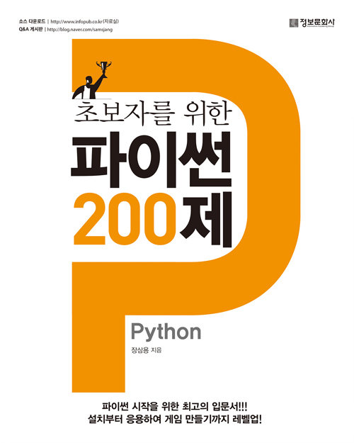

한국에서 일어나는 파이썬 관련 소식을 전합니다.
블로그
Django initial data by Choi Ji Hun 님
Django에서 데이터베이스에 데이터를 자동으로 넣을 때 사용하는 두 가지 방법 - fixture, RunPython - 에 대해 Choi Ji Hun 님이 설명합니다. (Django 1.10부터는 초기화 데이터 삽입시 fixture 말고 RunPython 방식을 사용하라고 권장하고 있습니다.)
파이썬으로 챗봇 만들기 by 김성동 님
스타트업에서 챗봇을 개발 중인 김성동 님이 파이선으로 챗봇을 만들고 이를 발전시키는 과정을 담은 발표자료를 공개했습니다.
Pipenv으로 Python 프로젝트 관리하기 by Choi Ji Hun 님
파이썬 세계에 진입할 때 많이들 어려움을 겪는 부분 중 하나가 패키지 관리가 아닐까 합니다. 그만큼 패키지 관리를 돕는 도구들도 많이 나오고 있는데요. Request로 잘 알려진 Kenneth Reitz가 새로 공개한 Pipenv의 사용 후기를 Choi Ji Hun 님이 정리하였습니다.
신간
초보자를 위한 파이썬 200제 by 정보문화사

- 장삼용 지음
- 정가 20,000원
- 376쪽(714g)